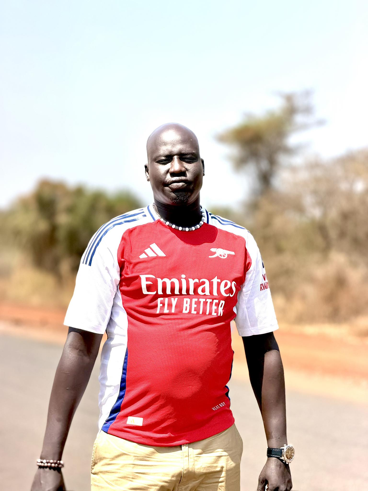
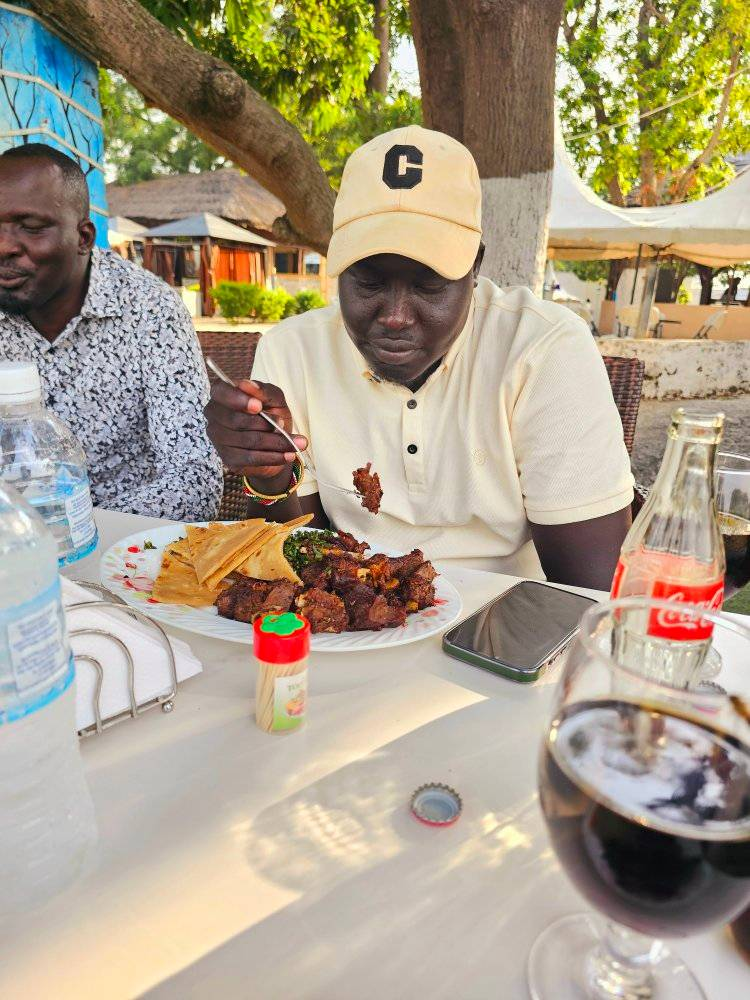
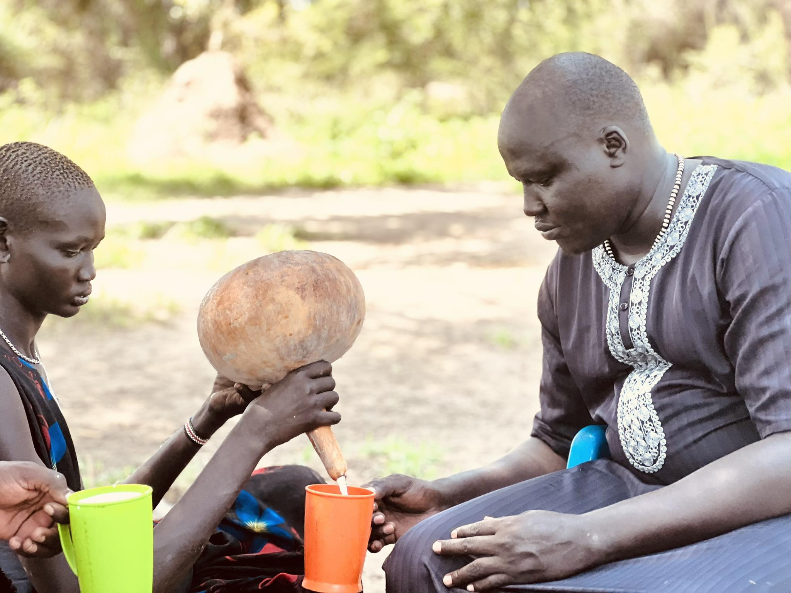

My Gallery

Vaccation picture

inspire by postive things

Veiw from restaurant
During live session at the Juba stadium

marvelous time at yirol freedom squere

cattle camp taking fresh milk

suit time

yirol west vibes

Fat one